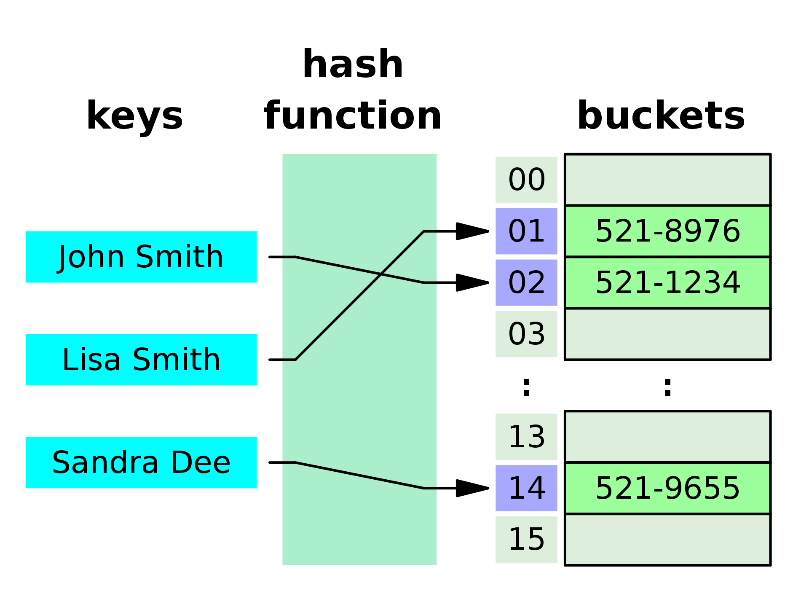

This blog will run through some of the basic concepts of web development.
These three languages are the building blocks of most websites. You can think of HTML like a canvas an artist uses, it holds the paint in position, and CSS is like the paint, what colours are choosen and how you would like those parts of the canvas to stand out. Javascript can do everything, it’s the brain of the painter. It’s able to choose a different canvas, decide on what paint to use, and any logic to compute (some of which may be hidden from view).
The DOM is what enables Javascript to interact with the canvas. It’s the artist’s body, their arms, legs, and hands that enable the painter to colour the canvas or choose a new one. The DOM is a schematic of the entire website whose object-like format allows you to change any part of a website. It’s actually possible to use any programming language to do this but Javascript is the default standard for most of the internet.
Searching for values in arrays is done so sequentially. That means that if you had a shopping list and wanted to find "eggs" on the list, you might have to go through all the items until you found it. In contrast, values accessed from javascript objects are done directly. How does it work? It works by using hashing functions and hash tables. We input what we are looking for into the hash function and out comes the location like magic! You can imagine it as if our supermarket shopper has made a rule to keep eggs in the centre of the page. When they search for eggs, they put that into the rule, and then the output tells them to look at the centre of the page. Hash functions, like SHA-256, are much more complicated rules. They always return the same output for the same input, have the same output length (64 characters), and it looks a bit like gibberish:
75712c3ea4c91a3c7089dbfc7ee4dacd29a6cdefb2a71a31c2e011ba44f18eea
Above is the SHA-256 output for the input "Javascript". You can build your own here. When you search for a value, the hash function tells you the index of it, and your computer goes directly to the location. In the example below, name’s are inputted into the hash function, and then the corresponding index and phone number can be found.
Once the index is known for an array, it is fast for the computer to find the corresponding value. Every value in an array, even empty, uses the same amount of space in memory. So when looking up the value of an index (eg: array[7]), the computer starts off with the home address of the array, and then multiplies the memory length 7 times, adds the two together, and then you have the exact address. Checkout this answer here for more.
The epicness of Javascript objects comes from their ability to calculate a value’s index without going through an array, but by using a hashing algorithm. Arrays don’t have this search capability although they are sometimes used in hashtables (and therefore objects) to store the indexes and values.
Control Flow
A program's control flow is the order in which the program's code executes. This occurs in imperative programs that tell computers exactly what to do and not declarative which tell a program what to do at a high level. Control flow is made up of individual statements, loops, instructions or function calls.
Loops
When loops are used, they make up part of a programs control flow. Each loop’s iteration is added to the control flow.
Functions, or more specifically programmatic functions, are repetitive procedures whose process always remains the same. They often have some kind of input and output. For example this function takes an input and returns 2 times the inputNumber:
function doubleInput(inputNumber){
return (2 * input)
}
Functions are really useful because they allow the code to be modular.
DOM
You can see a visual representation of the DOM by using Google Chrome's developer tools.

On the right we have the visual representation. You can open and close all the data like an object and it will show you where it corresponds on the page. In this example, I have highlighted the body element and you can see the orange margin, the green padding, and the blue content
Run Snippets
You can save script to be run on any website you like. Go to developer tools/ source/ create snippet. You can also use the snippet tool as a text editor!
Local Storage
Local Storage allows you to keep data held on the browser long after the browser is closed or you've changed website. The Dev Tools give you a nice way to explore different types of storage. Add the lines of code to your script (except for localStorage,clear), go to developer tools/ Application/ Local Storage
localStorage.setItem('name', 'Hello')
console.log(localStorage.getItem('name'))
localStorage.clear('name')

Session Storage
This works much like Local Storage except the data is cleared when your browser is closed or website changes
sessionStorage.setItem('name', 'Liam')
Cookies
document.cookie("username=John Doe")
Put output into groups:
console.group("group 1")
console.log("hello")
Log run time:
console.time(“name”) console.timeend(“name”)
Throw an error:
console.error("this is error message")
Back to main